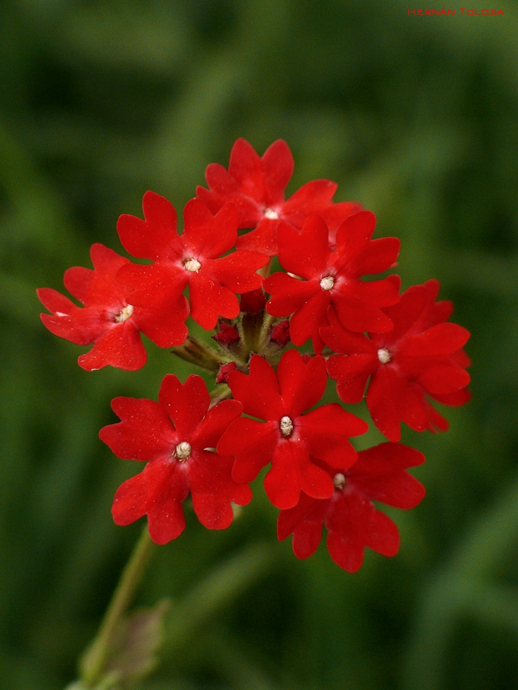
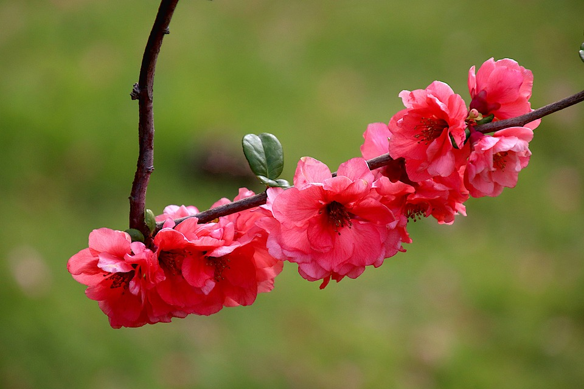
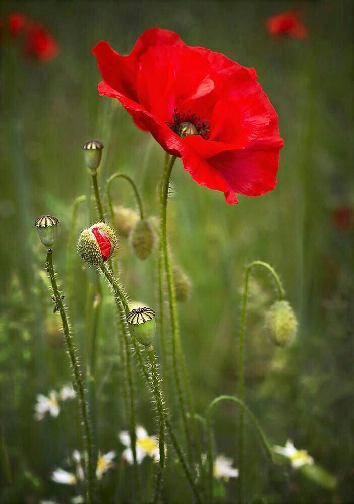
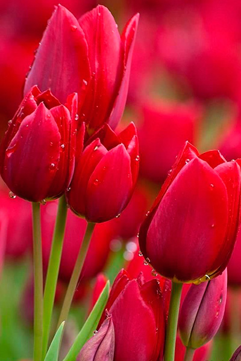
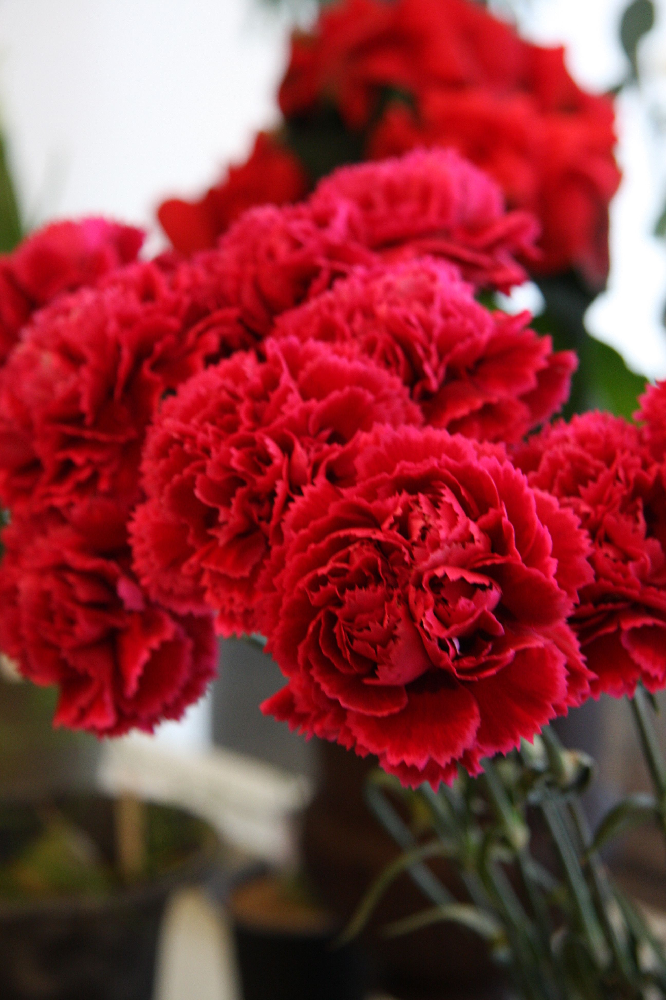
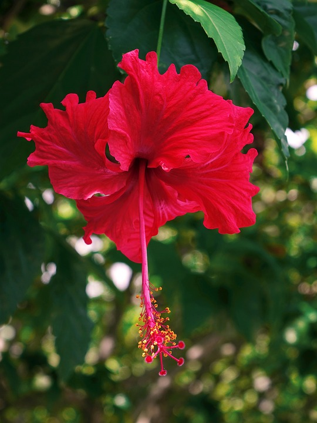

La verbena de flores rojas o de otros colores es una planta tanto de interior como de exterior, especialmente en climas templados o tropicales, y no requiere de grandes cuidados.

El membrillero japonés florece tanto en primavera como en otoño e invierno, por lo que es una de esas pocas plantas con la capacidad de embellecer un jardín con los vivos colores de sus flores en plena época fría.

Las amapolas rojas son otras de las plantas silvestres más conocidas en todo el mundo. Son muy apreciadas para cubrir zonas grandes de terreno o jardín y por sus propiedades medicinales.

Los tulipanes son una de las flores rojas con el color más puro que podemos encontrar en la naturaleza. Al ser unas flores tan delicadas son ideales para regalar en los momentos más tiernos que puedas vivir con las personas que te rodean.

Desde claros como el blanco, el amarillo y el rosa, hasta algunos más intensos como los claveles rojos. Además, hay algunas especies de claveles que tienen más de un color en sus flores, como el clavel de Indias.

La Malvavisco florece durante gran parte del año, y lo más importante al plantarlo es mantenerlo resguardado del viento. Tiene una gran resistencia a las bajas temperaturas, soportando heladas de hasta casi -10ºC.